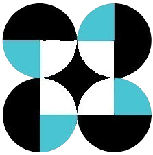

LRT Line 2 Stations

Home
LRT Line 1
MRT Line 3
MRT Line 7
Choose a Station:
Recto Station
Legarda Station
Pureza Station
V. Mapa Station
J. Ruiz Station
Gilmore Station
Betty Go-Belmonte Station
Araneta Center-Cubao
Anonas Station
Katipunan Station
Santolan Station
Marikina-Pasig Station
Antipolo Station